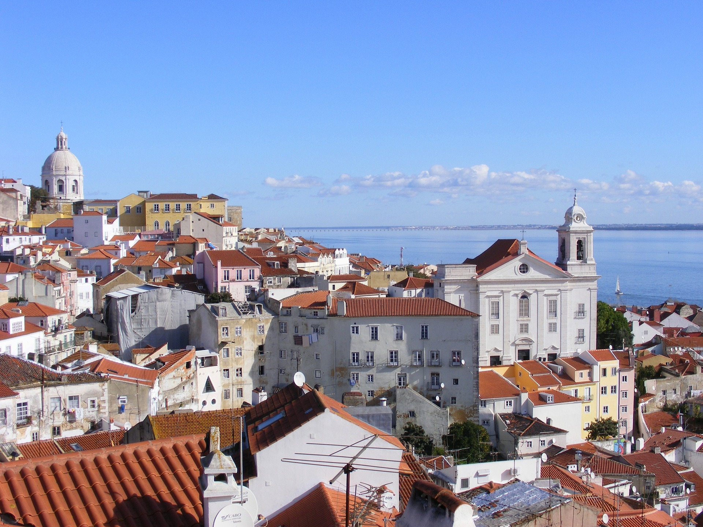
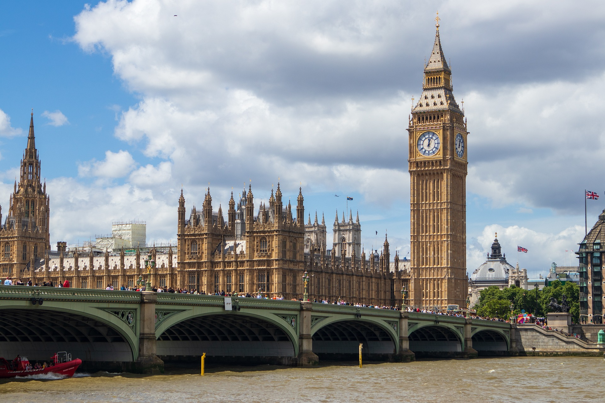
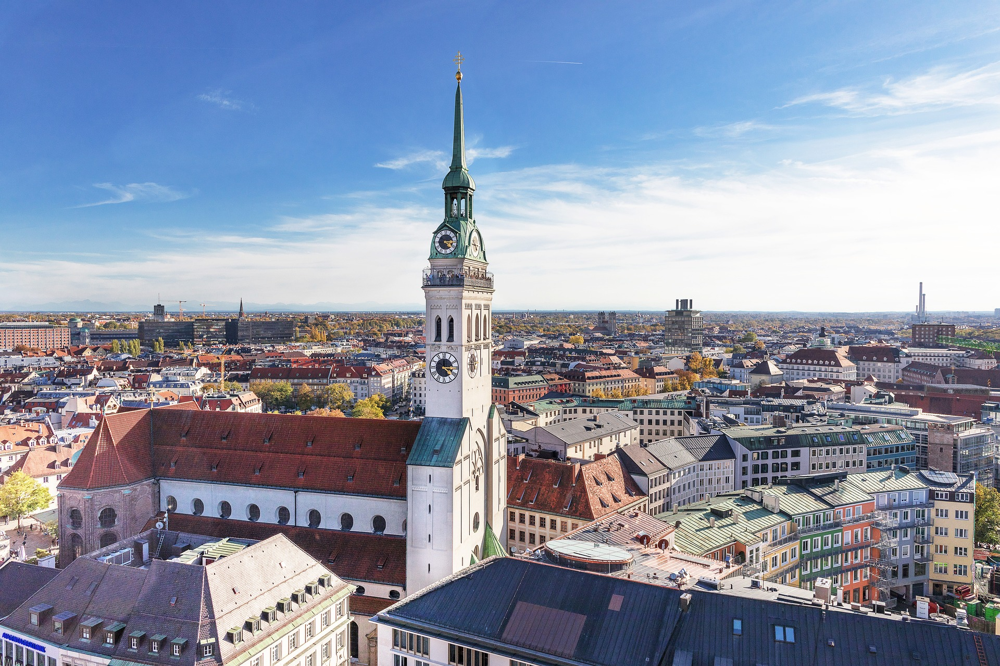
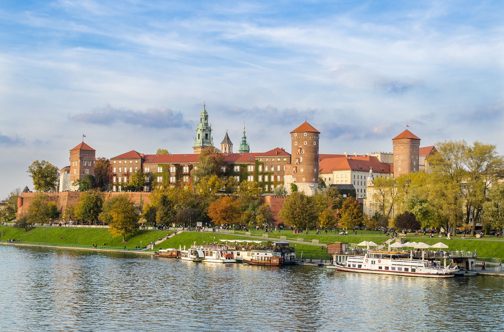
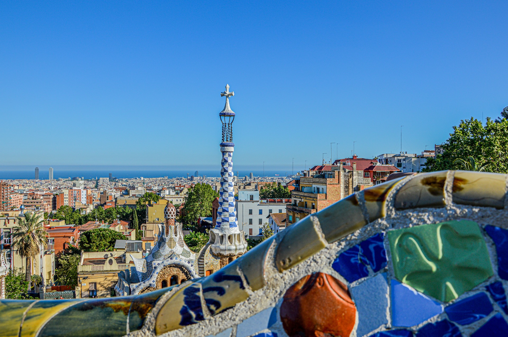
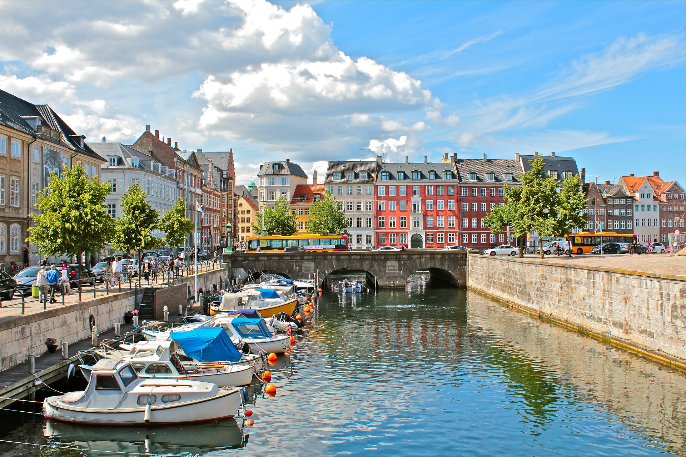

-

Lisbon, Portugal
Lisbon is the capital and largest city of Portugal, with an estimated population of 548,703 within its administrative limits in an area of 100.05 km2.
-

London, United Kingdom
London, the capital of England and the United Kingdom, is a 21st-century city with history stretching back to Roman times.
-

Munich, Germany
Munich, Bavaria's capital, is home to centuries-old buildings and numerous museums. The city is known for its annual Oktoberfest celebration and its beer halls, including the famed Hofbräuhaus, founded in 1589.
-

Krakow, Poland
Krakow is the second-largest and one of the oldest cities in Poland. It was the official capital of Poland until 1596.
-

Barcelona, Spain
Barcelona is the capital and largest city of the autonomous community of Catalonia, as well as the second-most populous municipality of Spain.
-

Copenhagen, Denmark
Copenhagen is the capital and most populous city of Denmark. The city is situated on the islands of Zealand and Amager, separated from Malmö, Sweden, by the Øresund strait.